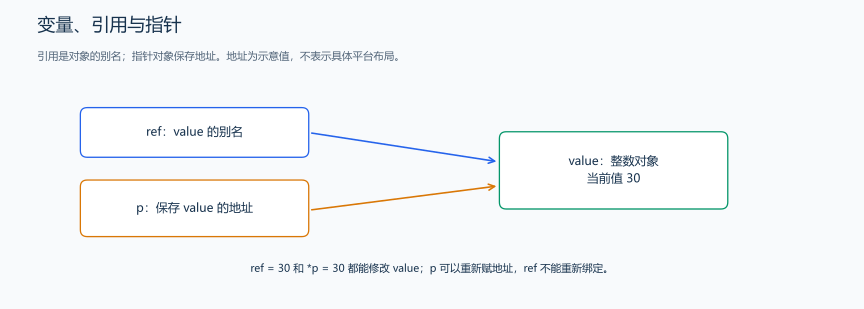
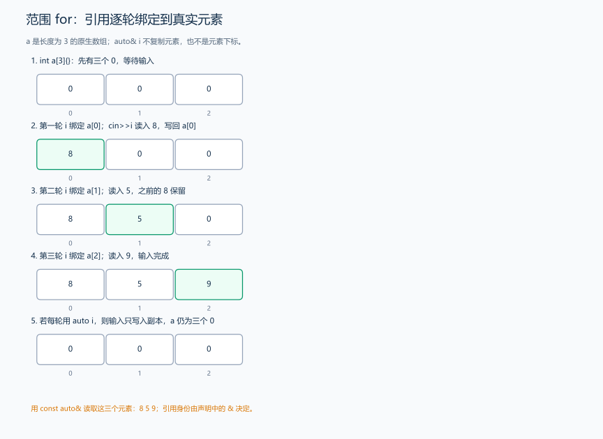
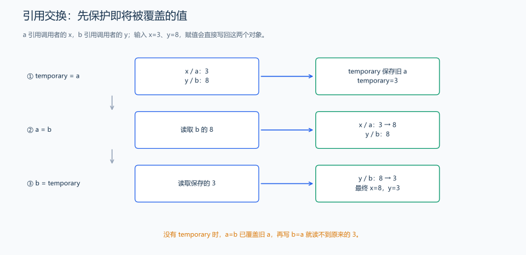
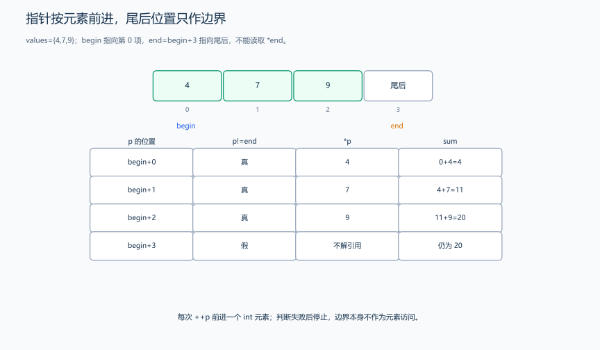
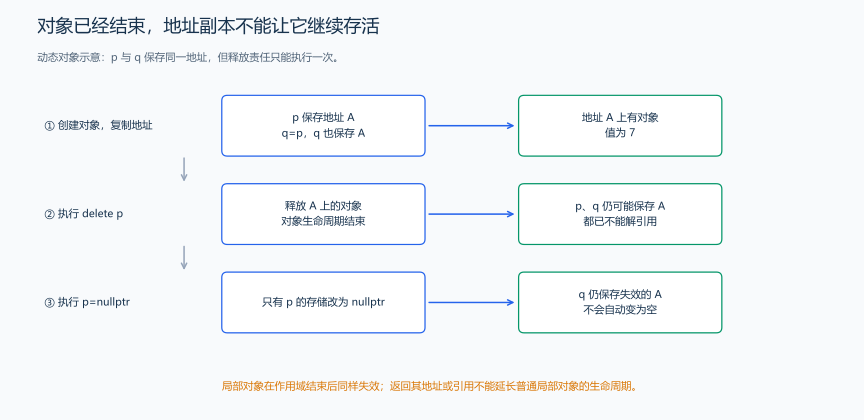

（八） 指针、引用与对象生命周期
上一节给参数副本加一，没有改变调用者的 x。现在希望函数能操作原变量：引用提供原对象的别名，指针保存可用于找到对象的地址。
下面的局部操作片段放在 main 的函数体中执行：
int value = 10;
int *p = &value; // &value 取得 value 的地址，p 保存这个地址。
int &ref = value; // 定义中的 & 表示引用，ref 是 value 的别名。
*p = 20; // *p 取得指针指向的对象，把 value 改为 20。
ref = 30; // 通过别名修改同一个 value。
p = nullptr; // nullptr 表示空指针，不能再通过 *p 访问对象。
同一个 & 在声明和表达式中的含义不同；图中的 ref 表示别名关系，不表示引用一定单独占用一块存储。指针可以改指向，引用一旦绑定就不能改绑；ref=other 是赋值给原对象，不是改绑到 other。
| 对比项 | 指针 | 引用 |
|---|---|---|
| 初始化 | 可以为空，推荐初始化 | 普通引用需要绑定一个对象 |
| 改变目标 | 可以重新赋地址 | 不能重新绑定 |
| 访问 | *p，访问前保证指向有效对象 |
直接用引用名 |
| 生命周期 | 所指对象销毁后会悬空 | 所绑定对象销毁后也会悬空 |
1. 把值传参改成引用或指针传参
题目原文（自拟）： 程序无需输入。x 从 10 开始，依次通过值参数、引用参数和指针参数加一，每次输出 x；最后求数组 1、2、3 的总和。
分析： 值参数仍修改副本；引用参数直接绑定 x；指针参数得到 &x 的地址副本，再通过 *p 修改 x。参数 const int* 只允许通过它读数组，不能通过这个参数改元素。
#include <iostream>
using namespace std;
void increaseCopy(int value) {
++value;
} // 只修改副本。
void increaseRef(int &value) {
++value;
} // 修改绑定的原变量。
void increasePointer(int *p) {
if (p != nullptr)
++*p; // 先判空，再访问所指对象。
}
long long sum(const int *values, int n) {
long long result = 0;
for (int i = 0; i < n; ++i)
result += values[i]; // 只读前 n 项。
return result; // 返回独立的整数，不返回局部变量的引用。
}
int main() {
int x = 10;
increaseCopy(x);
cout << x << '\n';
increaseRef(x);
cout << x << '\n';
increasePointer(&x);
cout << x << '\n';
int values[3] = {1, 2, 3};
cout << sum(values, 3) << '\n'; // 数组在这个调用中转换为首元素指针。
}输出：
10
11
12
6调用 sum(values,3) 时，values 转成首元素地址，3 告诉函数处理三项。函数中的 values 已是指针，sizeof 查询的是指针大小；原数组有几项则由传入的 n 表达。
| 参数形式 | 函数得到什么 | 是否能修改原对象 |
|---|---|---|
int value |
整数副本 | 不能 |
int& value |
原整数的别名 | 能 |
const int& value |
只读别名 | 不能通过该引用修改 |
int* p |
地址的副本 | 可通过有效的 *p 修改所指整数 |
const int* p 限制通过 p 修改所指整数；int* const p 限制 p 自己改指向；const int* const p 同时限制两者。离开函数后，普通局部变量已销毁，不能返回它的地址或引用给外部继续使用。
2. auto 与范围 for：逐项绑定原数组元素
先看 auto x=10;：初始化值是 int，编译器把 x 的类型推导为 int；auto 不表示类型能在运行中随意改变。范围 for（也叫 for-each）则让我们依次处理一个范围里的元素，不必自己写下标循环。
| 写法 | 本轮的 i | 修改是否写回数组 |
|---|---|---|
for (auto i : a) |
当前元素的副本 | 不能 |
for (auto& i : a) |
当前元素的引用，这里为 int& | 能 |
for (const auto& i : a) |
当前元素的只读引用 | 不能修改，读取时避免复制 |
题目原文（自拟）： 输入恰好三个 int 范围内的整数，存进长度 3 的原生数组，再按输入顺序输出，以单个空格分隔。

#include <iostream>
using namespace std;
int main() {
int a[3]{}; // 已创建三个 0；范围 for 会遍历数组的完整长度 3。
for (auto &i : a)
cin >> i; // i 是当前元素的引用，不是下标。
bool first = true;
for (const auto &i : a) {
if (!first)
cout << ' ';
cout << i; // 只读取数组元素，不修改它。
first = false;
}
cout << '\n';
}输入：
8 5 9输出：
8 5 9解释： 三轮的 i 分别绑定到 a[0]、a[1]、a[2]，cin 的输入写回对应元素。若改成 auto i，输入只写入三个临时副本，原数组仍为 0、0、0。原生数组的范围 for 遍历整个数组；只处理大数组的前 n 项时，i<n 的下标循环能明确控制实际访问数量。
3. 动态申请与释放
固定数组不能用输入 n 决定类型中的长度，但有时确实要在运行时申请 n 项。指针可以接收动态申请结果；先理解谁申请、谁释放，再学习自动管理内存的容器和对象。
#include <iostream>
using namespace std;
int main() {
int *value = new int(42); // 申请一个整数，并初始化为 42。
cout << *value << '\n';
delete value; // 单个对象的 new 与 delete 对应。
value = nullptr; // 释放后不能继续解引用旧地址。
int *values = new int[3]{}; // 数组申请，三个元素初始化为 0。
values[0] = 7;
cout << values[0] << '\n';
delete[] values; // 释放由 new[] 创建的整个数组。
values = nullptr;
}输出为 42、7，各占一行。new int[n] 可以使用运行时的正整数 n，申请成功后同样要按实际长度访问；它不会替我们记录有效长度或自动释放。重复释放、忘记释放和释放后继续访问都需要避免。后面的 STL 与资源管理章节会用这个问题说明自动管理的用途。
4. 通过引用交换：先保存将被覆盖的旧值
题目原文（自拟）： 输入两个绝对值不超过 \(10^9\) 的整数，通过引用参数交换它们，再输出交换后的值。
推导： 如果只执行 a=b; b=a;，第一步就覆盖了旧 a，第二步读到的也是原 b。先用 temporary 保存旧 a，再把旧 b 写入 a，最后把 temporary 写入 b。两个引用参数分别绑定调用者的变量，三次赋值会写回原对象。

#include <iostream>
using namespace std;
void swapValues(long long &a, long long &b) {
long long temporary = a; // 保存旧 a，避免下一步覆盖后丢失。
a = b;
b = temporary; // 把旧 a 写到 b，三个动作完成交换。
}
int main() {
long long x, y;
cin >> x >> y;
swapValues(x, y); // a、b 分别成为 x、y 的别名。
cout << x << ' ' << y << '\n';
}输入 3 8，输出 8 3。若把参数改成不带 & 的值参数，只会交换两份副本；函数结束后 x、y 仍保持原值。两值相同或两参数绑定同一对象时，这种三步交换也能保持正确结果。
5. 指针移动与数组下标的对应关系
原生数组在很多表达式中转成首元素指针。对指向同一数组的指针，p+i 向后移动 i 个元素，而不是移动 i 个字节；*(p+i) 读取对应元素，与 p[i] 的访问含义相同。
固定数据演示： 数组为 4、7、9，输出中间项，再从首元素指针走到尾后边界，求三项总和。

#include <iostream>
using namespace std;
int main() {
int values[3] = {4, 7, 9};
int *first = values; // 在此表达式中，数组转成首元素地址。
int *last = values + 3; // 合法的尾后指针，不能通过 *last 读取。
cout << *(first + 1) << '\n'; // 对应 values[1]，输出 7。
int total = 0;
for (int *p = first; p != last; ++p) {
total += *p; // 先读取当前项，再由 ++p 移到下一元素。
}
cout << total << '\n'; // 输出 20。
}first 指向第 0 项，last 指向尾后位置。循环每次先比较位置，再读取并移动，所以不会读取尾后位置；合法的移动范围从首元素到尾后位置。sizeof(values)/sizeof(values[0]) 用数组总大小除以单项大小，得到元素数；函数的指针参数只保存地址，sizeof 得到指针大小，因此长度要另外传入。
6. 对象结束生命周期，地址不会自动变成有效新对象
| 情况 | 对象何时消失 | 之后怎样处理访问 |
|---|---|---|
| 块内普通局部整数或数组 | 离开该块 | 不能保留地址或引用继续访问 |
| new 创建的对象 | 匹配的 delete 执行后 | 旧地址失效；用 delete 释放所创建的对象 |
| static 局部对象 | 通常持续到程序结束 | 名字仍局限于其声明范围 |
| 某对象的只读引用 | 取决于所引用的对象 | const 不会让原对象永久存在 |

把某个指针设为 nullptr 只修改这一份指针，不会自动清除其他指向同一对象的指针。释放后另一份地址副本仍可能看起来是一个地址，实际已不能解引用。返回局部变量地址、重复 delete、用 delete 释放 new[] 得到的数组，都是生命周期或释放配对错误。
普通局部对象常由实现中的栈管理，动态对象通常从动态存储区取得；判断能否访问的依据是对象生命周期和语言规则，不是看到某个地址“好像还没变”。后面的容器与资源管理会用自动释放减少手工维护责任。